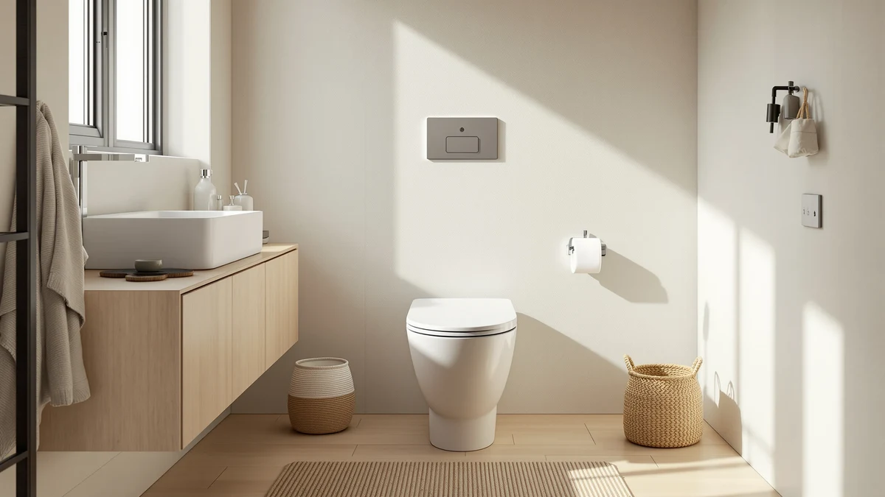

Quick Answer
The DeerValley Compact One Piece Toilet costs $249.00 and is built as a space-saving, one-piece design for smaller bathrooms. This DeerValley Compact One Piece review compares it against three lower-priced alternatives, including a second DeerValley compact model and two HOROW toilets, all still building their public review history, so the deciding factors come down to price and bowl footprint rather than star counts.
Our pick: DeerValley Compact One Piece Toilet, $249.00 Check Price on Amazon
Things to Know Before You Buy
- DeerValley prices the Compact One Piece Toilet at $249.00, the highest of the four models covered in this DeerValley compact one-piece review.
- It's built as a one-piece design, so the tank and bowl are molded together rather than bolted as separate parts, which removes a seam where grime can collect.
- DeerValley also sells a 1.28 flush-rated version of this same compact one-piece toilet for $228.87, a $20.13 difference from the model reviewed here.
- None of the four toilets in this comparison has built up a public rating or review count yet, so weigh the published price and category against that missing track record.
This DeerValley Compact One Piece review breaks down whether DeerValley's $249.00 toilet earns a spot in your bathroom over three lower-priced alternatives we compare it against on this site: a second DeerValley compact model and two HOROW toilets. DeerValley builds this toilet as a compact, one-piece design meant for bathrooms with limited floor space in front of the bowl, molding the tank and bowl into a single piece rather than bolting two parts together. We pulled together everything DeerValley publishes about this compact one-piece toilet, its price, and its category, and set it beside three direct competitors so you can see exactly where your money goes.
The short version: if you want a compact, one-piece toilet specifically from DeerValley and don't mind paying the highest price in this group, the $249.00 model reviewed here is a straightforward pick. But DeerValley's own 1.28 flush-rated version undercuts it by $20.13 at $228.87, and the HOROW HWMT-8733 Small Compact One comes in even lower at $224.00, both covering similar compact ground for less money. Pick the DeerValley Compact One Piece Toilet if brand consistency matters to you. Pick one of the three alternatives below if price is the deciding factor. Every model in this comparison lands within about $25 of each other, so the choice mostly comes down to brand loyalty, bowl shape, and how much you're willing to pay for the DeerValley name specifically.
Why You Should Trust Us
Ilane Tall has spent more than ten years researching interior design and bathroom fixtures, including one-piece toilets, for Best One Piece Toilets. She built this DeerValley Compact One Piece review by comparing DeerValley's own published listing against the three closest competitors on price and category, the same specification-comparison process the site uses for every review. We do not accept payment from DeerValley or HOROW to influence placement, and our Amazon links earn a commission only if you buy, which does not change what we recommend.
How We Compared
For this DeerValley compact one-piece review, we started with DeerValley's own product listing: the five product photos, its $249.00 price, and its compact, one-piece category. We then lined up the DeerValley against every other compact or closely priced one-piece toilet already covered on Best One Piece Toilets, narrowing the field to DeerValley's own 1.28 flush-rated compact model and two HOROW toilets, the HR-ST076W and the HWMT-8733, both priced within about $25 of DeerValley's pick. None of the four has built up a public review history yet, so we weighted our evaluation toward the facts we could verify: published price, product category, and brand, rather than guessing at long-term durability we cannot confirm firsthand. That gap is also why we lay out each toilet's documented price and category side by side instead of ranking them on star counts that don't exist yet. We update this DeerValley compact one-piece review whenever Amazon changes any of the four listed prices, so the figures above reflect what each seller was charging at the time of our most recent check.
Overview & Specs

DeerValley Compact One Piece Toilet
What we like
- One-piece design molds the tank and bowl together, removing the seam where grime collects on a two-piece toilet
- Compact footprint suits bathrooms with limited floor space in front of the bowl
- Comes from DeerValley, the same brand as the lower-priced 1.28 flush-rated alternative below, so you know what you're getting
- Listing includes five product photos showing the toilet from multiple angles, more visual detail than some competing listings
Flaws but not dealbreakers
- Priced $20.13 higher than DeerValley's own 1.28 flush-rated compact model, the closest alternative in this comparison
- No public rating or review count yet, so you're relying on DeerValley's own listing rather than verified buyer feedback
- DeerValley's listing doesn't specify rough-in distance or seat height, so confirm those measurements with the seller before you order
| Material | — |
| Size | — |
DeerValley builds this compact one-piece toilet in white, molding the tank and bowl into a single piece rather than bolting two parts together. That single-piece build removes the seam between tank and bowl where grime typically collects on a two-piece toilet, and the compact bowl shape is designed for bathrooms where floor space in front of the toilet is limited. At $249.00, it's the highest-priced model in this DeerValley compact one-piece review, though it shares its brand and compact, one-piece category with a second DeerValley model priced lower.
DeerValley hasn't published a rough-in distance, seat height, or flush rating for this specific listing. If those measurements matter to your bathroom, reach out to DeerValley or the Amazon seller before you buy rather than assuming this compact model matches the dimensions of DeerValley's other listings. What DeerValley does document is the compact, one-piece design and the $249.00 price, backed by five product photos showing the toilet from multiple angles. It also hasn't built up a public review count yet, so weigh that documented compact design against the missing track record before you commit.
What We Liked
The DeerValley Compact One Piece Toilet's biggest strength is its single-piece design paired with a compact footprint. Molding the tank and bowl together removes the seam where grime collects on a two-piece toilet, and the compact bowl shape works well in bathrooms where a full elongated model won't fit in front of the fixture. DeerValley backs the listing with five product photos from multiple angles, giving you a clearer look at the toilet's finish and shape than some competing listings offer. Buying from DeerValley also means you're getting the same brand as the lower-priced 1.28 flush-rated alternative in this comparison, so the manufacturer's build and support stay consistent across both models, which matters if you're trying to match fixtures throughout the same bathroom.
What Could Be Better
The biggest drawback in this DeerValley compact one-piece review is price relative to the field. At $249.00, this DeerValley model costs $20.13 more than DeerValley's own 1.28 flush-rated compact toilet and $25.00 more than the HOROW HWMT-8733 Small Compact One, both of which cover similar compact, one-piece ground. DeerValley also hasn't listed a rough-in distance, seat height, or flush rating anywhere on this listing, which means you can't line up those specs against the alternatives without emailing the seller first. The toilet has not accumulated any public rating or review count either, so we can't confirm long-term durability or real-world flush performance beyond what DeerValley's own listing describes. None of that erases the compact design or the single-piece build that make this toilet worth considering, but weigh it against the cheaper alternatives below. If you already own another DeerValley fixture and want matching hardware or finish across your bathroom, that consistency may be worth the premium on its own, even without the missing spec sheet.
Who Is It For?
This toilet fits buyers who want DeerValley's compact, one-piece design badly enough to pay the highest price in the group for it. Anyone replacing an existing DeerValley toilet, or who wants brand consistency with DeerValley's lower-priced 1.28 flush-rated model, will find it a straightforward match. Shopping mainly on price? DeerValley's own compact model in this DeerValley compact one-piece review covers the same general category for $20.13 less. And if you'd rather lean on verified buyer reviews before spending $249.00 on a toilet, hold off, since none of the four models here has built up that history yet. Renters and first-time buyers who don't already own DeerValley fixtures may find less reason to pay the premium, since the two HOROW alternatives below cover the same compact and elongated categories for less.
Alternatives to Consider
If the price or the missing review history gives you pause in this DeerValley compact one-piece review, these three toilets from DeerValley and HOROW cover similar compact and elongated ground for about the same money or less.

Editor's Pick
DeerValley Compact One-Piece Toilet 1.28
DeerValley's own 1.28 flush-rated compact model undercuts the pick above by $20.13, worth considering if you want the same brand for less money.
$228.87
Check Price on Amazon
Best Value
HOROW HR-ST076W Elongated Toilet with
HOROW's HR-ST076W is elongated rather than compact, so check your bathroom's floor space before choosing it over DeerValley's compact pick for $10.00 less.
$239.00
Check Price on Amazon
Premium Choice
HOROW HWMT-8733 Small Compact One
HOROW's HWMT-8733 Small Compact One matches DeerValley's compact category at $224.00, a $25.00 difference worth weighing against brand preference.
$224.00
Check Price on AmazonFrequently Asked Questions
Is the DeerValley Compact One Piece Toilet worth $249.00?
It's worth $249.00 if you specifically want DeerValley's compact one-piece design for a smaller bathroom. If price matters more than the brand, the HOROW HWMT-8733 Small Compact One in this DeerValley compact one-piece review saves you $25.00 at $224.00.
How does the DeerValley Compact One Piece Toilet compare to DeerValley's other compact model?
DeerValley sells two compact one-piece toilets in this comparison: the standard model at $249.00 and the 1.28 flush-rated version at $228.87, a $20.13 difference. Both share the same compact, one-piece category, so the flush rating and price are the main things separating them.
Should I choose a compact or elongated one-piece toilet?
Choose compact if your bathroom has limited floor space in front of the toilet, since compact bowls take up less depth than elongated ones. The HOROW HR-ST076W in this DeerValley compact one-piece review is elongated rather than compact, so it fits a different bathroom layout even though it's priced close to DeerValley's pick at $239.00.
Final Verdict
This DeerValley Compact One Piece review comes down to a straightforward trade-off. DeerValley's compact one-piece toilet delivers a single-piece build and a space-saving footprint at $249.00, the highest price among the four models we compared, and without the public review history that would let us confirm long-term durability firsthand. If brand consistency with DeerValley matters to you, this compact model is a sound buy at that price. If you'd rather save money, DeerValley's own 1.28 flush-rated version and the two HOROW alternatives above are worth a look.